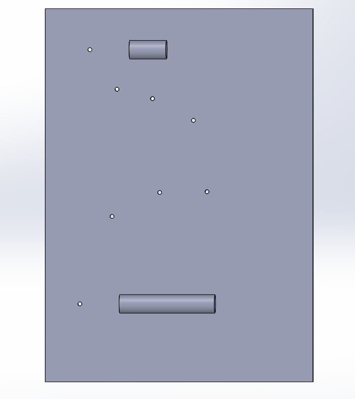

Northwestern Baja SAE, Sep 2024 to Jan 2025
H-arm welding fixture
The suspension H-arms are welded from several steel tubes, and their geometry sets the car’s suspension kinematics. I designed the fixture that holds every tube in its final position while the team welds.
- Team
- Northwestern Baja SAE
- Role
- Fixture designer
- Dates
- Sep 2024 to Jan 2025
- Tools
- SolidWorks assemblies, engineering drawings
- Status
- Built and used for welding

The problem
Welders need every tube held rigidly in place so each H-arm comes out accurate and the next one matches it. The fixture also had to go from idea to fabricated on an accelerated timeline.
Designing around the part
I designed and checked the whole fixture in a SolidWorks assembly before cutting any material:
- Started from a base plate with the finished H-arm model fixed as a reference.
- Placed standard locating components, collets and brackets, around the arm.
- Mated the collets to the base plate to build a cage that fully constrained the H-arm’s geometry.
- Added custom support bars and specified shoulder bolts as extra constraints, so heat from welding wouldn’t pull the arm out of position.
The deliverable was a fabrication package, not just a model: drawings for the base plate with every drilled and tapped hole located, and drawings for the support bars, so the team could build the fixture quickly and accurately.

What the welded parts showed
Post-weld inspection found the finished H-arm about ¼ in. off nominal. Tracing it back was a direct lesson in tolerance stack-up: small allowances at each locator add up across a large welded assembly. Even a simple-looking fixture needs a deliberate tolerance budget, and that lesson shaped the ±0.001 in. locating I designed into later fixtures.